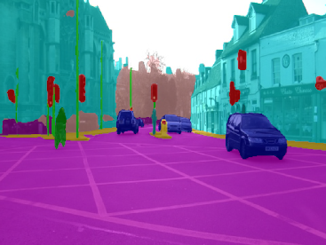

MMSegmentation is a comprehensive and flexible framework for image segmentation that offers a wide variety of architectures. Custom docker images with additional tools are available from here:
https://github.com/waikato-datamining/mmsegmentation
Prerequisites#
Make sure you have the directory structure created as outlined in the Prerequisites.
Data#
In this example, we will use the CamVid-12 dataset, which consists of still images from dashcam videos from a city environment (12 different labels).
Download the dataset from the following URL into the data directory and extract it:
https://datasets.cms.waikato.ac.nz/ufdl/data/camvid12/camvid12-grayscale.zip
Once extracted, rename the grayscale directory to camvid-grayscale.
Noe we have to convert the format from grayscale into indexed PNG, which MMSegmentation uses. We can do this by using the wai.annotations library. At the same time, we can split the dataset into train, validation and test subsets.
From within the applied_deep_learning directory, run the following command:
docker run -u $(id -u):$(id -g) \
-v `pwd`:/workspace \
-t waikatoufdl/wai.annotations:latest \
wai-annotations convert \
from-grayscale-is \
-i "/workspace/data/camvid-grayscale/*.png" \
--labels sky building pole road pavement tree signsymbol fence car pedestrian bicyclist unlabelled \
to-indexed-png-is \
-o /workspace/data/camvid-indexed-split \
--split-names train val test \
--split-ratios 70 15 15
Training#
For training, we will use the following docker image:
waikatodatamining/mmsegmentation:0.25.0_cuda11.1
The training script is called mmseg_train, for which we can invoke the help screen as follows:
docker run -t waikatodatamining/mmsegmentation:0.25.0_cuda11.1 mmseg_train --help
It is good practice creating a separate sub-directory for each training run, with a directory name that hints at
what dataset and model were used. So for our first training run, which will use mainly default parameters, we will
create the following directory in the output folder:
camvid12-mmseg-pspnet50
Before we can train, we will need to obtain and customize a config file. Within the container, you can find example configurations for various architectures in the following directory:
/mmsegmentation/configs
Using the mmseg_config command, we can expand and dump one of these configurations for our
own purposes:
docker run \
-u $(id -u):$(id -g) \
--gpus=all \
-v `pwd`:/workspace \
-v `pwd`/cache:/.cache \
-v `pwd`/cache/torch:/.cache/torch \
-t waikatodatamining/mmsegmentation:0.25.0_cuda11.1 \
mmseg_config \
--config /mmsegmentation/configs/pspnet/pspnet_r50-d8_512x1024_40k_cityscapes.py \
--output_config /workspace/output/camvid12-mmseg-pspnet50/pspnet_r50.py
Open the pspnet_r50.py file in a text editor and perform the following operations:
- change
num_classesto 12 (background not counted). - change
dataset_typetoExternalDatasetand any occurrences oftypein thetrain,test,valsections of thedatadictionary. - change
data_rootoccurrences to/workspace/data/camvid-indexed-split(the directory above thetrainandvaldirectories). - change
img_diroccurrences toimg_dir=data_root+'/DIR',withDIRbeing the appropriatetrain,valortest - do the same with
ann_dir
Kick off the training with the following command:
docker run \
-u $(id -u):$(id -g) \
--shm-size=8g \
--gpus=all \
-v `pwd`:/workspace \
-v `pwd`/cache:/.cache \
-v `pwd`/cache/torch:/.cache/torch \
-e MMSEG_CLASSES="sky,building,pole,road,pavement,tree,signsymbol,fence,car,pedestrian,bicyclist,unlabelled" \
-t waikatodatamining/mmsegmentation:0.25.0_cuda11.1 \
mmseg_train \
/workspace/output/camvid12-mmseg-pspnet50/pspnet_r50.py \
--work-dir /workspace/output/camvid12-mmseg-pspnet50
Predicting#
Using the mmseg_predict_poll script, we can batch-process images placed in the predictions/in directory
as follows (e.g., from our test subset):
docker run \
-u $(id -u):$(id -g) \
--shm-size 8G \
--gpus=all \
-v `pwd`:/workspace \
-v `pwd`/cache:/.cache \
-v `pwd`/cache/torch:/.cache/torch \
-e MMSEG_CLASSES="sky,building,pole,road,pavement,tree,signsymbol,fence,car,pedestrian,bicyclist,unlabelled" \
-t waikatodatamining/mmsegmentation:0.25.0_cuda11.1 \
mmseg_predict_poll \
--model /workspace/output/camvid12-mmseg-pspnet50/latest.pth \
--config /workspace/output/camvid12-mmseg-pspnet50/pspnet_r50.py \
--prediction_in /workspace/predictions/in \
--prediction_out /workspace/predictions/out
Notes
- The predictions can either be output in grayscale (default) or bluechannel format (
--prediction_format). - You can view the predictions with the ADAMS Preview browser and, e.g., the SimpleImageSegmentationAnnotationsHandler
(which will overlay the PNG transparently on the JPG; may require some configuring via the
...button).
Example prediction

